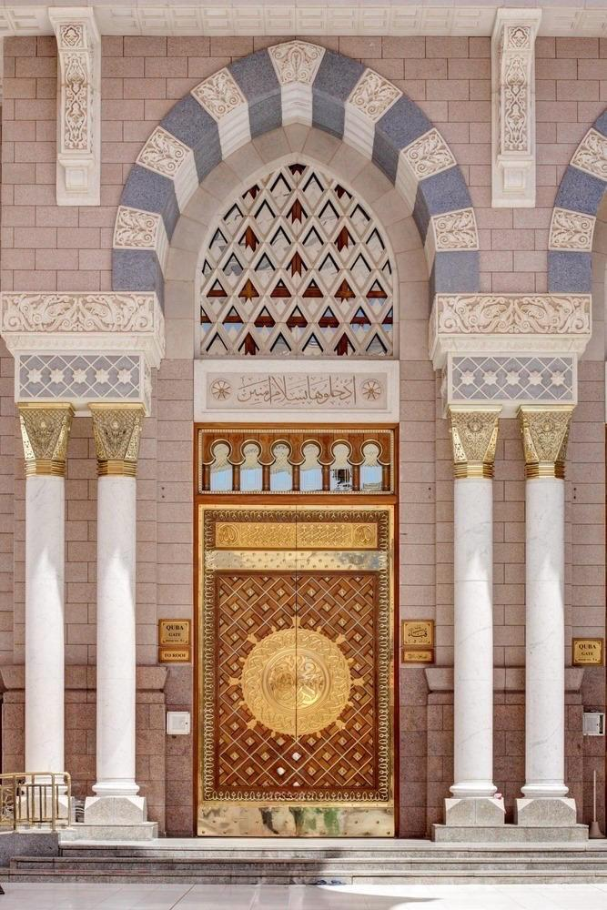
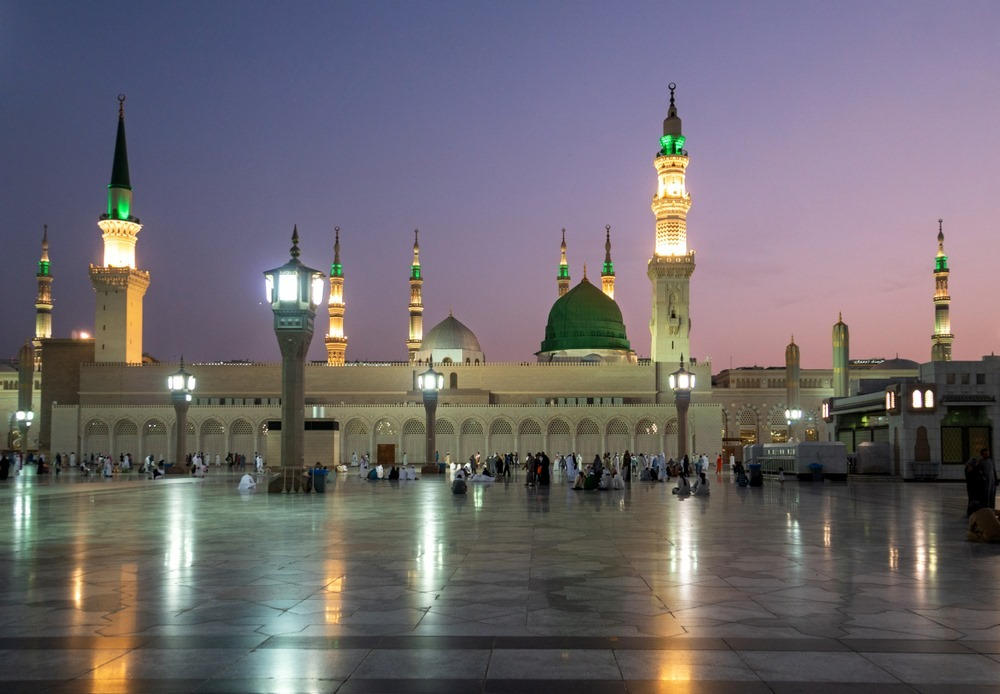

كيف يقرأ القاصد هذا الدليل
هذا الدليل لا يهدف إلى تحميل الزائر عددًا كبيرًا من الأدعية أو الإجراءات، وإنما إلى مساعدته على أن يؤدي الزيارة بهدوء، وخشوع، واتباع للسنة، مع احترام حرمة المكان وحقوق بقية القاصدين. والأصل أن المقصود هو عبادة الله تعالى، والصلاة في المسجد النبوي، والصلاة والسلام على رسول الله ﷺ، ثم اغتنام ما تيسر من الصلاة والذكر والدعاء في الروضة دون مزاحمة أو أذى.
القاعدة العملية المختصرة
دخول بأدب ← تحية المسجد ← الروضة إن تيسرت ← الصلاة والذكر والدعاء ← التوجه إلى المواجهة الشريفة ← السلام على النبي ﷺ ← السلام على أبي بكر رضي الله عنه ← السلام على عمر رضي الله عنه ← الانصراف بهدوء.
ولا يلزم أن تكون الزيارة بهذا الترتيب الحرفي في كل حالة؛ فقد يدخل القاصد وقت صلاة جماعة، أو تكون الروضة في وقت مختلف، أو يتعذر الوقوف عند المواجهة بسبب التنظيم والزحام. عندئذ تكون المحافظة على الصلاة والخشوع وعدم إيذاء الناس مقدمة على تحقيق صورة شكلية للزيارة.
الأساس الشرعي للزيارة
المسجد النبوي من المساجد الثلاثة التي ثبت في الصحيح أن السفر التعبدي يُقصد إليها، قال النبي ﷺ: «لا تُشَدُّ الرحال إلا إلى ثلاثة مساجد: المسجد الحرام، ومسجد الرسول ﷺ، ومسجد الأقصى». رواه البخاري.
المصدر: صحيح البخاري، حديث 1189 — sunnah.com/bukhari:1189وثبت في صحيح مسلم أن الصلاة في المسجد النبوي أفضل من ألف صلاة فيما سواه من المساجد، إلا المسجد الحرام. وهذا الفضل عام للمسجد النبوي، وليس مقصورًا على الروضة.
المصدر: صحيح مسلم، حديث 1394a — sunnah.com/muslim:1394أما الروضة، فقد ثبت في الصحيح قول النبي ﷺ: «ما بين بيتي ومنبري روضة من رياض الجنة». ولهذا فهي بقعة ذات فضل خاص، ويُستحب اغتنامها بالصلاة والذكر والدعاء إذا تيسر ذلك من غير مزاحمة.
المصدر: صحيح البخاري، حديث 1195 — sunnah.com/bukhari:1195تمييز مهم بين فضائل المسجد وفضائل الروضة
| الموضوع | الحكم/الفضل | المصدر |
|---|---|---|
| الصلاة في المسجد النبوي | أفضل من ألف صلاة فيما سواه إلا المسجد الحرام، وهذا يشمل المسجد النبوي كله. | صحيح مسلم 1394a |
| الروضة الشريفة | موضع بين بيت النبي ﷺ ومنبره، وصفه النبي ﷺ بأنه روضة من رياض الجنة. | صحيح البخاري 1195 |
| الصلاة النافلة في الروضة | استحب عدد من أهل العلم الإكثار من النافلة فيها إذا تيسر دون أذى أو مزاحمة. | فتاوى ابن باز، وفتاوى ابن عثيمين؛ نقلها إسلام سؤال وجواب |
| صلاة الجماعة | لا ينبغي أن يترك القاصد الصفوف المتقدمة في الجماعة من أجل الروضة؛ فالصف الأول له فضل مستقل. | نقل أهل العلم عن حديث الصف الأول |
قبل دخول المسجد النبوي
- استحضار النية: القصد هو الصلاة والعبادة في المسجد النبوي، مع السلام على النبي ﷺ، وليس طلب حاجة من النبي أو دعاؤه من دون الله.
- الحرص على الطهارة والنظافة وحسن الهيئة، وخفض الصوت، وتجنب الانشغال بالتصوير والمحادثات.
- الالتزام بالتعليمات التنظيمية ومسارات الدخول؛ فهي جزء من حفظ النظام ورفع الأذى عن المسلمين.
- إذا كانت للزائر رغبة في دخول الروضة الشريفة، فيتحقق مسبقًا من متطلبات الحجز والتنظيم الحالية عبر منصة نسك الرسمية، لأن الإجراءات التشغيلية قد تتغير.
دخول المسجد النبوي
عند الدخول، يدخل برجله اليمنى ويقول الذكر الوارد عند دخول المسجد: «اللهم افتح لي أبواب رحمتك». وقد ثبت ذلك في صحيح مسلم.
صحيح مسلم، حديث 713a — sunnah.com/muslim:713«اللهم افتح لي أبواب رحمتك»
لا توجد صيغة خاصة ثابتة للمسجد النبوي تختلف عن سائر المساجد في ذكر الدخول؛ فالسنة الواردة عامة في دخول المسجد.
بعد الدخول، إن لم تقم الصلاة المكتوبة، يصلي تحية المسجد ركعتين، أو يصلي النافلة التي يقصدها وتجزئ عن التحية. وإن أقيمت الصلاة، يدخل مع الإمام ولا ينشغل بتحية مستقلة.

بطاقة جيب للقاصد
- قبل الدخول: طهارة + نية + هدوء + اتباع التنظيم.
- عند الدخول: «اللهم افتح لي أبواب رحمتك» + تحية المسجد إن لم تقم الصلاة.
- في الروضة: صلاة نافلة + ذكر + دعاء لله وحده + لا مزاحمة.
- عند المواجهة: السلام على النبي ﷺ بصوت خافت وأدب.
- ثم: السلام على أبي بكر رضي الله عنه.
- ثم: السلام على عمر رضي الله عنه.
- بعد ذلك: الانصراف بهدوء وعدم التعلق بالمكان أو تكرار المرور بلا حاجة.
- إذا تعذر دخول الروضة: الصلاة في أي موضع من المسجد النبوي فضل عظيم، ولا يفوت القاصد أصل فضل المسجد.
المسار الكامل للزيارة في صفحة واحدة
- الوصول إلى المسجد النبوي: طهارة، سكينة، التزام بالتعليمات.
- الدخول: الرجل اليمنى و«اللهم افتح لي أبواب رحمتك».
- تحية المسجد: ركعتان إن لم تقم الصلاة.
- الروضة: إن كان لديك تصريح/مسار دخول متاح، توجه عبر المسار الرسمي.
- الصلاة: صلِّ ما تيسر من النافلة دون مزاحمة.
- الذكر والدعاء: اجعل الدعاء لله وحده، ولا تتقيد بدعاء مخصوص غير ثابت.
- المواجهة الشريفة: السلام على النبي ﷺ بخفض صوت وأدب.
- بعدها: السلام على أبي بكر رضي الله عنه.
- بعدها: السلام على عمر رضي الله عنه.
- الانصراف: بهدوء، دون إطالة أو تعطيل للمسار.
- إذا تعذر دخول الروضة: لا تحزن؛ صلِّ في المسجد النبوي، وأكثر من الصلاة والسلام على النبي ﷺ والذكر والدعاء.
من المسجد النبوي
